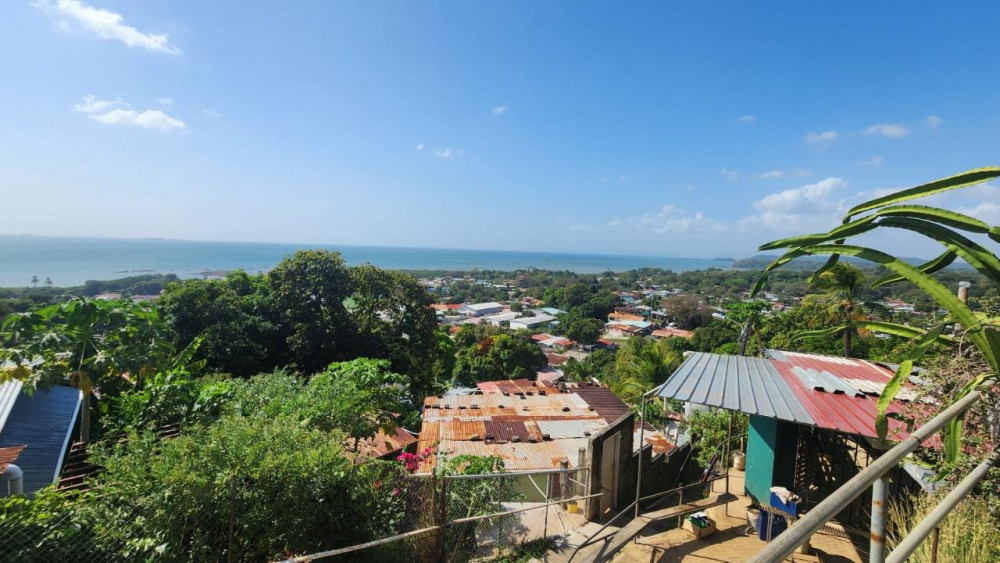
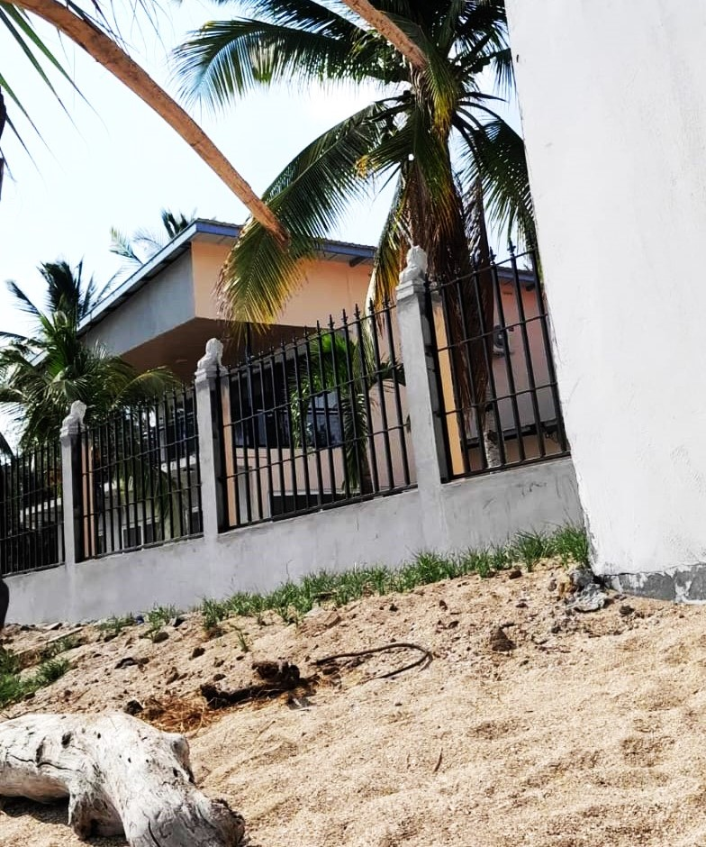
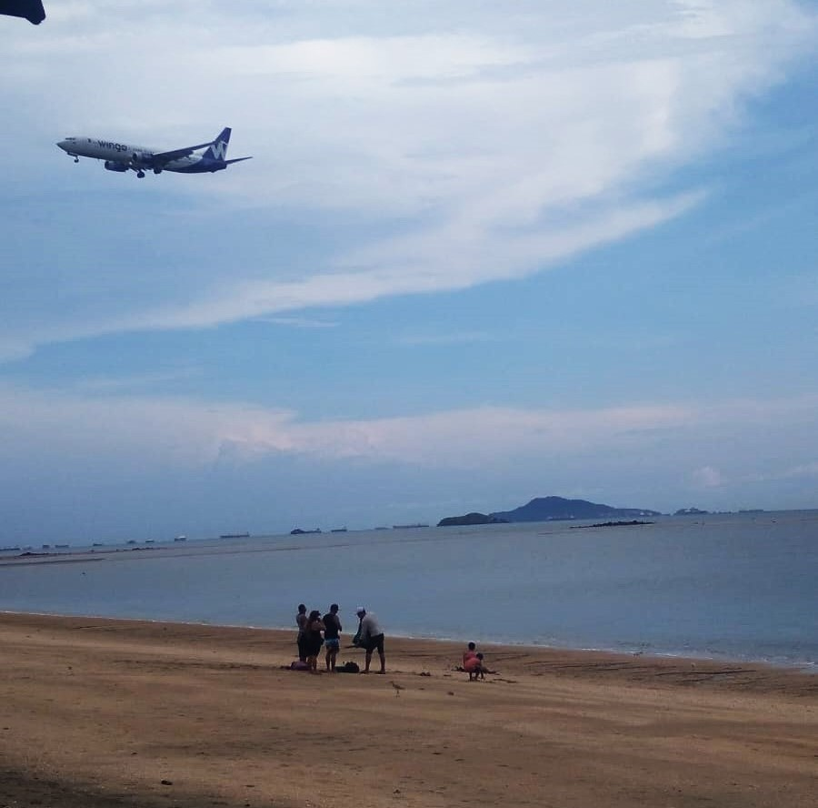
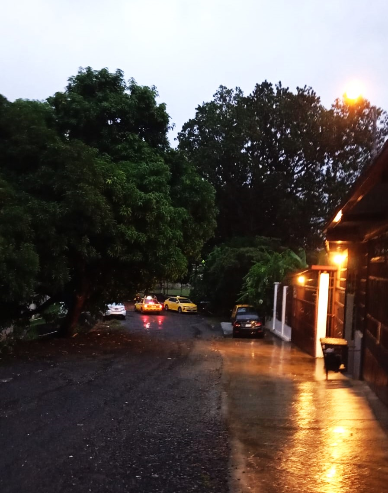
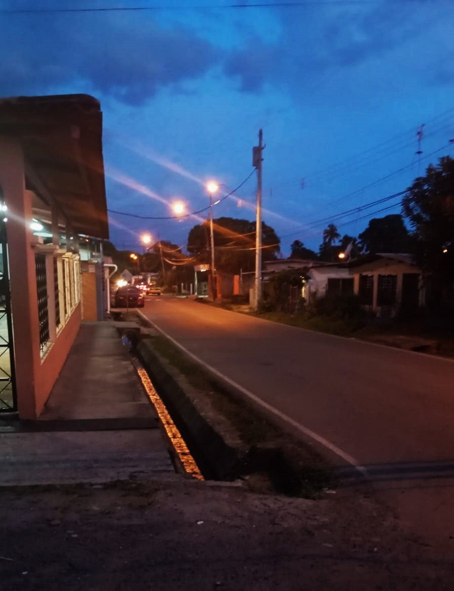
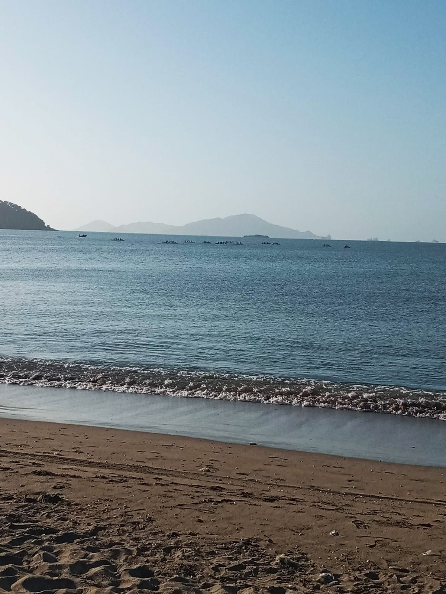
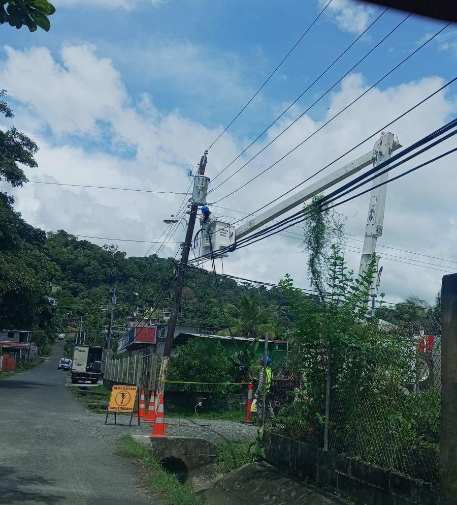
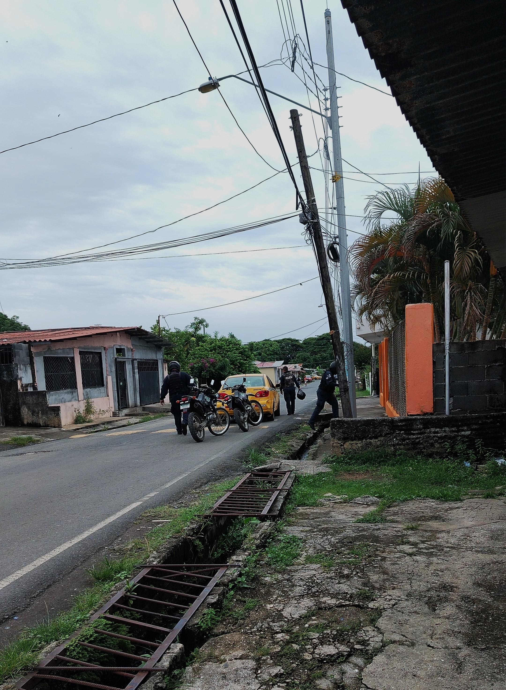

Fecha de creación e información importante: Veracruz es un corregimiento del distrito de Arraiján en la provincia de Panamá Oeste, República de Panamá. La localidad tiene 24 486 habitantes (2023). El corregimiento limita al norte con Arraiján (cabecera), al sur con el océano Pacífico, al este con el distrito de Panamá y al oeste con Cerro Silvestre. El 22 de julio de 1954, oficialmente fue constituido el nombre de Veracruz y en 1962 Fue elevado a categoría de corregimiento. En este se ubica el Aeropuerto Internacional Panamá Pacífico, la antigua base americana Howard, uno de los aeropuertos de la provincia de Panamá, en el distrito de Arraiján. Orígenes: Vera es un nombre de mujer que podría tener un origen latino vera (verdadera). Aunque lo más probable es que podría proceder del ruso вера /wjera/ (mujer con fe, o simplemente fe, con lo que santa Vera significaría santa fe). Eventos historicos: Veracruz también fue el espacio ocurrieron los principales enfrentamientos entre distintas facciones españolas como la expedición de Pánfilo de Narváez y la batalla de Cempoala de 1520, las expediciones de Francisco de Garay en Pánuco en 1519, 1520 y 1523, además el intento fallido de Cristóbal de Tapia por despojar a Cortés de la gobernación de la Nueva España en 1521. Características Arquitectónicas en Veracruz: En Veracruz, las construcciones suelen ser mayoritariamente residenciales y reflejan un estilo de vida sencillo y pragmático, propio de áreas rurales y de comunidades de clase media. Algunas características comunes incluyen: Casas de una planta: La mayoría de las viviendas son de una sola planta, construidas con materiales como bloques de concreto y techos de zinc, que son económicos y prácticos para el clima de la región. Patios espaciosos: Muchas casas tienen patios amplios, lo que permite a las familias tener jardines, huertos o espacio para animales domésticos. Verjas y rejas: Es común ver viviendas rodeadas de verjas de metal o madera para delimitar las propiedades y proporcionar seguridad. Estilo mixto: Las casas pueden mostrar una mezcla de estilos modernos y tradicionales, con elementos simples y decoraciones prácticas. Lugares de Interés: Aeropuerto Internacional Panamá Pacífico: Ubicado cerca de Veracruz, este aeropuerto fue una antigua base militar de la Fuerza Aérea de los Estados Unidos. Mirador de las Américas: Un mirador que ofrece vistas impresionantes del Puente de las Américas y el océano Pacífico. Playa Veracruz: Una playa popular entre los residentes y turistas por su ambiente tranquilo y hermosas vistas. Cerro Cabra: Un cerro que ofrece senderos de senderismo y vistas panorámicas de la región. Chorro de Santa Clara: Un hermoso chorro de agua que es un destino turístico popular en el distrito. Monumentos: Monumento a la Presencia de los Estados Unidos: Ubicado cerca del aeropuerto, este monumento conmemora la historia de la base militar estadounidense en la región. Ruinas de Bique: Restos arqueológicos que ofrecen una visión de la vida y la cultura de las antiguas civilizaciones que habitaron la región. Aspectos Culturales o Sociales del Barrio: Veracruz de Arraiján es un corregimiento con una rica tradición cultural y social. La comunidad es conocida por su hospitalidad y espíritu comunitario. Las festividades y eventos locales son una parte importante de la vida cotidiana,con celebraciones religiosas, ferias y actividades recreativas que fortalecen los lazos entre los vecinos. Artistas o Personajes Destacados: Aunque Veracruz de Arraiján no es tan conocido por tener una gran cantidad de artistas famosos, sí tiene personajes locales que han contribuido significativamente a la comunidad. Uno de ellos es Adalberto Rodríguez, quien ha sido un precursor de lazos sociales y culturales en Arraiján, organizando eventos como la Semana Santa en vivo, que reafirma la fe y la cultura cristiana en la región. Aspectos Negativos en Veracruz: Falta de agua 24/7: En muchos sectores, la disponibilidad de agua no es constante, lo que puede ser un desafío para las familias que dependen de un suministro regular. Cortes de luz: La electricidad no siempre es confiable, y los cortes de luz son comunes, lo que puede interrumpir las actividades diarias y afectar el acceso a servicios esenciales. Problemas de señal: La señal de internet y telefonía móvil puede ser inestable, lo que dificulta la comunicación y el acceso a información en tiempo real. Seguridad: Algunas áreas pueden tener problemas de seguridad, con incidentes de delincuencia que preocupan a los residentes. Infraestructura deficiente: La falta de infraestructura adecuada, como aceras y caminos pavimentados, puede dificultar la movilidad y aumentar el riesgo de accidentes.







